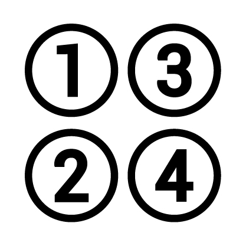
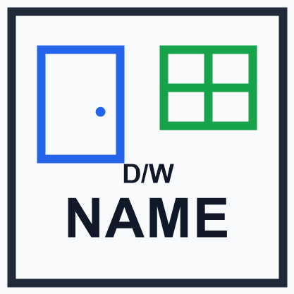

ภาพรวมระบบและขั้นตอนการทำงาน (Workflow Lifecycle)
จุดเริ่มต้นของกระบวนการถอดแบบ BIM ในโมดูลาร์ยูนิต QHeim
กฎเหล็กสำคัญ 3 ข้อก่อนเริ่มนำเข้าไฟล์ CAD AR:
- จุด Origin (0,0,0) ใน AutoCAD ต้องเป็นจุดอ้างอิงเดียวกันทุกชั้น (1F, 2F, 3F): ห้ามขยับหรือ Move แปลนหนีจุดกำเนิดเด็ดขาด มิฉะนั้นแต่ละชั้นจะไม่ซ้อนทับกัน
- ต้องรัน VBA Macro ส่งออกข้อความ Text เป็น JSON ใน AutoCAD ก่อนเสมอ: รัน Macro เพื่อสร้างไฟล์
C:/QHeim/DATA/export-text.jsonมิฉะนั้นตัวหนังสือจะไม่เข้า SketchUp - ลำดับการกดปุ่มใน SketchUp ต้องเรียงตามลำดับ:
Import CAD Original→Unit Number→Door Window Name
เตรียมไฟล์และส่งออก JSON
ตั้งหน่วยเป็น Millimeters, ตรวจพิกัด Origin (0,0,0), จัดเลเยอร์ตามมาตรฐาน QHeim, แล้วรัน VBA Macro บันทึกข้อความลง export-text.json
นำเข้าแบบและตั้งชื่อยูนิต
กดปุ่ม Import CAD Original เพื่อวาง DWG ตรงพิกัดเดิม พร้อมสร้าง 3D Text ภาษาไทย/อังกฤษ แล้วกด Unit Number รวมกริดเข้าเป็น S-Unit
ซิงค์ชื่อช่องเปิดและงานระบบ
กดปุ่ม Door Window Name เพื่อจับคู่บล็อก 2D กับข้อความสถาปัตย์ ระบุทิศเปิด _L/_R และส่งต่อให้ระบบ LongleadTime, Exterior Wall และ PartInstall
หน้าต่างแถบเครื่องมือควบคุม (UI Controller)
หน้าต่าง HTML Dialog: Heim_CADImport.html ควบคุมผ่าน Heim_CADImportIcon.rb
| ไอคอน | ชื่อปุ่มคำสั่ง (Tool Title) | Action / Callback | ไฟล์ Ruby ที่ประมวลผล | หน้าที่และการทำงานหลัก |
|---|---|---|---|---|
| Import CAD Original | import_cad | Heim_InsertCADLTF.rb | นำเข้าไฟล์ DWG อิงจุดพิกัดจริง (Preserve Origin) และดึงข้อความจาก JSON มาสร้างเป็น 3D Text แม่นยำ 100% | |
|
 |
Unit Number | unit_number | Heim_InsertCADLTF.rb | ตรวจหากริดยูนิต EE-GRID-UNIT ร่วมกับเบอร์ A-ANNO แล้วรวมเป็นก้อน S-Unit |
|
 |
Door Window Name | door_window_name | Heim_DoorNameLTF.rb | ผสานชื่อตัวหนังสือ, จับคู่กับบล็อก 2D ใน A-DOOR / A-WIND, คำนวณทิศเปิด _L/_R และเปลี่ยนชื่อ Definition |
| Import EE Text Inside | import_text_inside | Heim_InsertCADLTF.rb | นำเข้าข้อความภายในบล็อกอุปกรณ์ไฟฟ้าจากไฟล์ export-text-inside-ee-block.json |
|
| Import AC Text Inside | import_text_inside_ac | Heim_InsertCADLTF.rb | นำเข้าข้อความภายในบล็อกระบบปรับอากาศจากไฟล์ export-text-inside-ac-block.json |
|
| AC | AC Select Components | manage_ac_components | Heim_ACGroup.rb | เลือกและจัดกลุ่มบล็อกคอมโพเนนต์งานระบบปรับอากาศในโมเดล |
| EE | EE Map Height | ee_map_height | Heim_EEGroup.rb | สแกนข้อความ H=xxxx ในกลุ่ม EE-TEXT เพื่อแม็ประดับความสูงลง Attribute ของอุปกรณ์ |
| EE | EE Change Height | ee_edit_height | Heim_EEGroup.rb | เปิดกล่องข้อความแก้ไขระดับความสูง (mm) ของบล็อกอุปกรณ์ไฟฟ้าที่เลือกพร้อมกัน |
| EE | EE Show Height | ee_show_text_height | Heim_EEGroup.rb | สร้าง 3D Text จำลองลอยเหนืออุปกรณ์เพื่อตรวจสอบค่าความสูงก่อนส่งผลิตจริง |
ช่วงที่ 1: ขั้นตอนการเตรียมและส่งออกไฟล์ใน AutoCAD (CAD AR Preparation)
ขั้นตอนสำคัญสำหรับผู้เขียนแบบ AutoCAD ก่อนส่งมอบไฟล์เข้ากระบวนการ QHeim
การตั้งค่าหน่วยและระบบพิกัด (Units & WCS Origin)
- Length Type: Decimal
- Insertion Scale: Millimeters (มิลลิเมตร)
- Angle Type: Decimal Degrees
เลือกจุดตัดแนวเสาหลักของอาคาร (เช่น เสากริด 1-A) ให้เป็นพิกัด (0, 0, 0) ของ WCS โดยแปลนทุกชั้น (1F, 2F, 3F) ต้องใช้จุดตัดเดียวกันนี้เป็นจุดกำเนิดร่วมเสมอ
การจัดโครงสร้างเลเยอร์ให้ตรงตามข้อกำหนด QHeim
ระบบ QHeim กรองอ่านเลเยอร์ตามข้อกำหนดใน C:/QHeim/DATA/floorplanlayers.txt ผู้เขียนแบบต้องตรวจสอบว่าวัตถุอยู่ในเลเยอร์ที่ถูกต้อง:
กริดยูนิตโมดูลาร์
ตัวเลขยูนิต 01, 02..
บล็อกบานประตู 2D
บล็อกบานหน้าต่าง 2D
ข้อความชื่อบานประตู
ข้อความชื่อหน้าต่าง
เส้นแนวผนังอาคาร
จุดช่องท่อดูดควัน
การรัน VBA Macro ส่งออกข้อความ (Export Text JSON)
เพื่อแก้ปัญหาระบบนำเข้าของ SketchUp ไม่สามารถถอดรหัสภาษาไทยและตำแหน่ง Anchor ของ AutoCAD MText:
- ในหน้าต่าง AutoCAD ให้พิมพ์คำสั่ง VBALOAD แล้วเลือกไฟล์
C:\QHeim\ExportLTF.dvb - พิมพ์คำสั่ง VBARUN แล้วเลือกสั่งรันฟังก์ชัน ExportAllText_ForSketchUp_Anchored
- ระบบจะทำการสแกนข้อความ Text/MText ใน ModelSpace ทั้งหมด แล้วเขียนไฟล์บันทึกไว้ที่:
C:\QHeim\DATA\export-text.json
- กล่องข้อความ AutoCAD จะเด้งขึ้นแจ้งเตือนยืนยัน: "Export complete. Text count: xxx"
การบันทึกไฟล์ CAD DWG ลงโฟลเดอร์โครงการ
สั่งทำความสะอาดไฟล์ด้วย -PURGE → ALL แล้วบันทึกไฟล์ไว้ในไดเรกทอรีมาตรฐานโครงการ เช่น:
D:\00_QHeim_Work\<ชื่อโปรเจกต์>\<ชื่อแบบ>.dwg
ช่วงที่ 2: ขั้นตอนการนำเข้าและประมวลผลใน SketchUp (SOP)
ลำดับการคลิกใช้งานแถบเครื่องมือ Import OTF CAD สำหรับคนทำงาน
สเต็ปที่ 1: นำเข้าแบบ CAD พิกัดเดิม (Import CAD Original)
Heim_InsertCADLTF.import_cad_original_locationการกระทำ: คลิกไอคอน Import CAD Original → หน้าต่างเลือกไฟล์จะเปิดขึ้น → นำทางไปยังโฟลเดอร์โครงการแล้วเลือกไฟล์ .dwg แล้วกด Open
สิ่งที่ระบบทำอัตโนมัติ:
1. นำเข้าไฟล์ DWG โดยตั้งค่าพิกัดจุดกำเนิดตรงกัน preserve_origin: true หน่วยมิลลิเมตร
2. ระเบิด Group ครอบนอกสุด 1 ครั้งเพื่อกระจายเลเยอร์
3. อ่านไฟล์ export-text.json เพื่อสร้าง 3D Text ภาษาไทย/อังกฤษ (Cordia New) ตรงตำแหน่งพิกัดเป๊ะ
4. ทำความสะอาดเลเยอร์และ Zoom Extents ให้อัตโนมัติ
สเต็ปที่ 2: จัดกลุ่มและสร้างรหัสยูนิต (Unit Number)
Heim_InsertCADLTF.groupunitการกระทำ: เมื่อแบบ CAD เข้ามาแล้ว ให้กดปุ่ม Unit Number ทันที โดยไม่ต้องเลือกวัตถุใดๆ ล่วงหน้า
สิ่งที่ระบบทำอัตโนมัติ:
ระบบจะจับคู่สี่เหลี่ยมกริด EE-GRID-UNIT กับข้อความตัวเลขใน A-ANNO แล้วรวมเป็น Group ยูนิตเดียวกัน พร้อมย้ายเข้าสู่เลเยอร์ S-Unit และตั้งชื่อเป็นเลข 2 หลัก (01, 02...) พร้อมบันทึก Attribute ตำแหน่ง
วิธีตรวจสอบ: คลิกที่ยูนิตในหน้าต่าง Entity Info จะต้องเห็น Layer เป็น "S-Unit" และ Instance Name เป็นเลขยูนิตสองหลัก
สเต็ปที่ 3: ซิงค์ชื่อช่องเปิดและทิศทางเปิด (Door Window Name)
Heim_DoorNameLTF.newการกระทำ: กดปุ่ม Door Window Name → เมื่อมีกล่องข้อความถาม "Merge same-line text before grouping?" ให้ตอบ Yes → หากมีประตูทางเข้าหลัก ให้เลือกประเภท Sub-type ใน Popup ยืนยัน
สิ่งที่ระบบทำอัตโนมัติ:
1. จัดกลุ่มข้อความกำกับช่องเปิดเข้าสู่เลเยอร์ text_door
2. ค้นหาบล็อก 2D ใน A-DOOR และ A-WIND แล้วจับคู่กับข้อความชื่อบานที่ใกล้ที่สุด (< 0.90 ม.)
3. ยิงพิกัดเช็คขอบยูนิต (checkOpen) เพื่อต่อท้ายชื่อทิศทาง เช่น _L หรือ _R
4. เปลี่ยนชื่อ Component Definition และ Instance ให้ตรงกับแบบจริง (เช่น WW1222_R)
สเต็ปที่ 4: การจัดการงานระบบอาคาร (EE & AC Tools - เสริม)
Heim_EEGroup • Heim_ACGroupกดปุ่มนำเข้า Text Inside เพื่อดึงสัญลักษณ์และโค้ดอุปกรณ์ที่อยู่ภายในบล็อกแอร์และระบบไฟฟ้า
เลือกอุปกรณ์ไฟฟ้า แล้วกดปุ่มนี้เพื่อสแกนข้อความ H=xxxx มาบันทึกลง Attribute ความสูง
กดดูตัวเลข 3D แสดงความสูงจำลองเพื่อตรวจสอบความถูกต้อง หรือแก้ไขระดับพร้อมกันทั้งกลุ่ม
สถาปัตยกรรมและตรรกะเชิงลึก (Code Architecture)
อธิบายการทำงานเชิงเทคนิค อัลกอริทึม และสูตรคำนวณเบื้องหลัง
1. ตัวเลือกการนำเข้า DWG (Preserve Origin Options)
ในไฟล์ Heim_InsertCADLTF.rb ระบบกำหนด Options เพื่อบังคับให้ SketchUp นำเข้าตามพิกัดจริงของ AutoCAD โดยไม่มีการเลื่อนตำแหน่ง:
options = {
:units => "mm", # บังคับหน่วยมิลลิเมตรให้ตรงกับ AutoCAD UNITS
:merge_coplanar_faces => false, # ไม่ยุบระนาบ เพื่อรักษาความสมบูรณ์ของเส้น
:show_summary => false, # ปิดกล่องข้อความสรุปของ SketchUp
:preserve_origin => true # หัวใจสำคัญ: ยึดจุดกำเนิด WCS (0,0,0) ป้องกันการเซ็ตเข้ากึ่งกลางอัตโนมัติ
}
status = model.import(dwg_path, options)2. การแปลง Anchor และสร้าง 3D Text ภาษาไทยจาก JSON
เนื่องจาก 3D Text ของ SketchUp กำหนดจุดกำเนิดที่มุมล่างซ้ายเสมอ สคริปต์จึงคำนวณเวกเตอร์ Translation ย้อนกลับตามจุด Anchor ที่บันทึกมาจาก AutoCAD:
3. อัลกอริทึมจับคู่บล็อกช่องเปิดและต่อท้ายทิศทาง (_L / _R)
การทำงานใน Heim_DoorNameLTF.rb มีขั้นตอนคำนวณ 3 ขั้นตอน:
xaxis.angle_between น้อยกว่า 5 องศา และระยะแกน Y ต่ำกว่า 20 มม. จึงรวมเป็นข้อความเดียวกันcheckOpen): ตรวจสอบเวกเตอร์ของกรอบบานเทียบกับขอบเขต Bounding Box ของยูนิตเพื่อกำหนดทิศทางบานสวิง:
WW1222 + _R → WW1222_R
ตารางเลเยอร์และมาตรฐานข้อมูล (Layer Standards Matrix)
โครงสร้างเลเยอร์ใน AutoCAD และบทบาทในระบบ SketchUp QHeim
| เลเยอร์ใน AutoCAD | เลเยอร์ใน SketchUp | ประเภท Entity | บทบาทในระบบ QHeim | ระบบที่นำไปใช้ต่อ |
|---|---|---|---|---|
| EE-GRID-UNIT | EE-GRID-UNIT | Component / Block | เส้นและบล็อกกรอบสี่เหลี่ยมขอบเขตของยูนิตโมดูลาร์ | รวมเข้า S-Unit |
| A-ANNO | A-ANNO → S-Unit | Text / 3D Text | ตัวเลขระบุเบอร์ของยูนิต เช่น 01, 02 หรือ H01 | Unit Number → S-Unit |
| A-DOOR | A-DOOR | ComponentInstance 2D | สัญลักษณ์บานประตู 2D (บานสวิง, บานเลื่อน, ประตูทางเข้า) | LongleadTime (Door3D) |
| A-WIND | A-WIND | ComponentInstance 2D | สัญลักษณ์บานหน้าต่าง 2D (บานเลื่อน, บานกระทุ้ง, ช่องแสง) | LongleadTime (Door3D) |
| A-ANNO-DOOR | text_door | 3D Text Group | ข้อความรหัสเบอร์บานประตู เช่น ENTRANCE, D01 | Door Window Name |
| A-ANNO-WIND | text_door | 3D Text Group | ข้อความรหัสเบอร์หน้าต่าง เช่น WW1222, EW0920 | Door Window Name |
| A-WALL | A-WALL | Line / Polyline | เส้นแนวผนังและขอบเขตกั้นห้องสถาปัตย์ 2D | Interior Wall System |
| A-PATT-WALL | A-PATT-WALL | Hatch / Lines | ลวดลายและแฮทช์แสดงวัสดุบนแนวผนัง | Visual Reference |
| A-AREA | A-ANNO-A-AREA | Polyline Loop | เส้นขอบเขตพื้นที่ห้องสำหรับคำนวณตารางเมตร (Area) | Floor Area Calculation |
| Hood | Hood | Component / Circle | จุดตำแหน่งท่อระบายอากาศและฮูดดูดควันในห้องครัว | Exterior Wall (Hood) |
| IN-SAN-WARE | IN-SAN-WARE | Component 2D | สุขภัณฑ์ อ่างล้างหน้า โถส้วม และอุปกรณ์ห้องน้ำ | Sanitary & Joint Plate (WC) |
| EE-TEXT | EE-TEXT | 3D Text Group | ข้อความกำกับระดับความสูงอุปกรณ์ไฟฟ้า เช่น H=300, H=1100 | EE Map Height |
| EE-EQPM-* | 02-eeblock | ComponentInstance | บล็อกอุปกรณ์ไฟฟ้า (เต้ารับ, สวิตช์, ตู้ควบคุม, แอร์) | EE Electrical System |
แนวทางแก้ไขปัญหาที่พบบ่อย (Troubleshooting Guide)
วิธีวินิจฉัยและแก้ปัญหาที่มักพบในงานเตรียมและนำเข้าไฟล์ CAD AR
1. แปลนแต่ละชั้นนำเข้าแล้วไม่ตรงกัน (ชั้น 1 กับชั้น 2 เหลื่อมกัน)
สาเหตุ: จุดกำเนิด Origin (0,0,0) ใน AutoCAD ของทั้งสองไฟล์ไม่ได้อยู่ที่ตำแหน่งเสาเดียวกัน หรือเกิดการ Move ย้ายแปลนหลังจากเขียนเสร็จ
X=0, Y=0, Z=0 หรือไม่ หากไม่ตรง ให้ใช้คำสั่ง MOVE แปลนทั้งหมดโดยใช้จุดตัดเสานั้นเป็น Base Point แล้วพิมพ์พิกัดปลายทางเป็น 0,0,0 จากนั้น Save ไฟล์แล้ว Import เข้า SketchUp ใหม่
2. ตัวหนังสือภาษาไทยไม่ปรากฏ หรือขึ้นเตือน "CAD text JSON file not found"
สาเหตุ: ยังไม่ได้สั่งรัน VBA Macro ใน AutoCAD หรือรันแล้วแต่เกิดข้อผิดพลาดในการเขียนไฟล์ C:/QHeim/DATA/export-text.json
ExportAllText_ForSketchUp_Anchored → รอจนมี Popup ยืนยันยอดจำนวนตัวอักษร แล้วค่อยกลับมากดปุ่ม Import CAD Original ใน SketchUp
3. สระหรือวรรณยุกต์ภาษาไทยอ่านไม่ออกหรือเพี้ยน (Encoding Issue)
สาเหตุ: การเข้ารหัสไฟล์ข้อความไม่ตรงกันระหว่างระบบ Windows ANSI กับ UTF-8
Heim_InsertCADLTF.rb เวอร์ชันล่าสุดได้รับการปรับปรุงให้อ่าน Byte Order Mark (UTF-16LE, UTF-8) อัตโนมัติ หากยังพบปัญหา สามารถเปิดไฟล์ C:/QHeim/DATA/export-text.json ด้วย Notepad แล้วกด Save As → เลือก Encoding เป็น UTF-8 with BOM
4. บล็อกประตู-หน้าต่างไม่เปลี่ยนชื่อ หรือไม่ต่อท้ายทิศทาง (_L / _R)
สาเหตุ:
1. ตัวหนังสือไม่ได้อยู่ในเลเยอร์ A-ANNO-DOOR หรือ A-ANNO-WIND
2. บล็อก 2D ไม่ได้อยู่ในเลเยอร์ A-DOOR หรือ A-WIND
3. ระยะห่างระหว่างตัวหนังสือกับบล็อกไกลเกินระยะ Tolerance 0.90 เมตร
5. กด Unit Number แล้วไม่เกิดกลุ่มในเลเยอร์ S-Unit
สาเหตุ: ข้อความตัวเลขยูนิตในเลเยอร์ A-ANNO ไม่ได้อยู่ภายในพื้นที่สี่เหลี่ยมกริดของ EE-GRID-UNIT หรือรูปแบบข้อความไม่ได้เป็นตัวเลข
01, 02) หรือขึ้นต้นด้วยตัว H (เช่น H01) และตำแหน่งตัวหนังสือต้องวางอยู่ภายในกรอบสี่เหลี่ยมกริดของยูนิตนั้นๆ